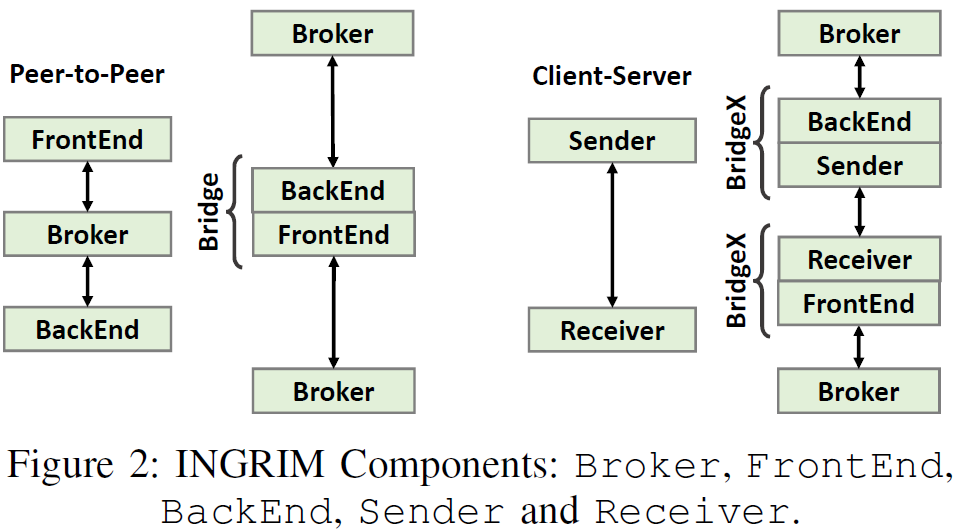

INGRIM: A Middleware to Enable Remote Method Invocation Routing in Multiple Group Device-to-Device Networks
Intro
This article introduces INGRIM - an Inter-group Remote Invocation Middleware, the library-based middleware system to enable routing remote method invocation over multiple group device-to-device networks. INGRIM provides annotations for declaring distribution decision and out-of-box components that enable peer-to-peer offloading, even when a client app and the service provider do not have a direct network link or Internet connectivity.
WiFi-Direct
WiFi Direct is a new peer-to-peer communication standard built on top of the IEEE 802.11 to provide direct connections between the Wi-Fi-enabled devices without Internet connections. With WiFi Direct, a single device can only belong to a single group at any time. It is possible, though, for a device to still use its legacy WiFi client (LC) to connect to an Internet access points or any other peer device directly.
WiFi Direct forms short-range opportunistic networks by polling available nearby devices and electing a Group Owner (GO). When a device becomes GO, it establishes a virtual access point (i.e., soft AP) and starts a DHCP service to automatically assign IP addresses (range of 192.168.49.0/24) for itself and other clients of its group.
Since WiFi Direct only allows each device to belong to one group, the members of a group (including the group owner) cannot use WiFi Direct to talk to members of another group, or to an Internet access point for that matter. Fortunately, WiFi Direct does not preclude the direct use an LC and it exposes a GO's soft AP to other devices outside the group. So, an app running in another group can use its LC to establish a communication link to the GO of the first group. After its LC is connected, that LC will be assigned an IP in from the GO's DHCP's IP range.
Service Definition
Developer indicates a class as service by declaring @MobileService annotation on the class prototype, where transmission type can be either binary (TransmitType.Binary) or JSON format (TransmitType.JSON). By default transmission type is set to Binary but user can select JSON for the simple request wrapping primitive data such as String, this option is useful to display messages while they are routing in DEBUG mode.
Service functions always come with @ServiceMethod annotation, the other functions without this annotation will be excluded during the compilation. There are two options for function synchronous mode: Async - the result is handled by a common handler and system can jump immediately to the next call, Sync - the request device is blocked until the result arrives. The below code shows a service sample with two simple functions greeting in Sync mode and getFolderList in Async mode.
During the compilation, the AnnotationProcessor module will automatically generate the Proxy and Skeleton classes that are going to be placed on the local and remote devices. Proxy is a generated class which resides on the local device to dispatch function call requests. It has the same function list as the Service but inner implementation is the generated code to convert function call to a request message. A Proxy contains an instance of FrontEnd for synchronous calls and a Sender for the asynchronous, for ServiceA, the Proxy has assigned name by default, which is ServiceAProxy.
The Skeleton is a generated class which resides on the remote device to resolve function requests. Skeleton inherits BackEnd class and contains an instance of the Service to call the corresponding function if it receives a request with the same functionName. By default, the Skeleton is assigned with the name ServiceASkeleton.
Proxy and Skeleton In Use
INGRIM library is modularized by components that are possible to cooperate with both WiFi and WiFi Direct, application developer therefore can opt to construct any network topology they may expect.
Developer firstly installs the ServiceASkeleton on the remote device, it will come with a Broker to host the services and trigger connection with another device.
On the local device developer starts a Broker to host services and a Bridge to reach out for the remote Broker. Then, he starts ServiceAProxy and declare how to handle incoming responses from asynchronous function calls in the receive() callback. In the callback implementation, msgType indicates whether a message is information (BROKER_INFO) or response message (function name), the developer is required to add appropriate code to manipulate the responses.
INGRIM Components
The middleware is constituted by 6 main components: Broker, BackEnd, FrontEnd, Sender, Receiver and Bridge, each has different functionality but shares the basic structure including ring buffers to buffer incoming and outgoing messages, and ZMQ sockets.
Figure below depicts the preexisted communications among the components. In Figure \ref{fig:grim_coms}-1, BackEnd connects and registers its services to Broker while the Broker buffers the request messages sent from FrontEnd, forwards each request to the corresponding BackEnd to resolve and forwards result back to the FrontEnd. This type operates in asynchronous mode, the FrontEnd's callback handler is where incoming messages such as results and info messages are proceeded. Figure below introduces a more sophisticated strategy with the involvement of a Bridge, an intermediate between two Brokers. The Bridge consists of a FrontEnd and BackEnd, one connects to the left Broker and another connects to the right. These two types will be used for Peer-to-Peer and Group-to-Group modes.

These components don't start at the same time. Generally, Broker always starts first right after network has been established to either host services for its current group or interconnect with the other groups. Then, BackEnds come after Broker to register their services, when it starts, it sends service definition in JSON format to the Broker. The service definition consists of (1) action as an indicator for Broker to register/unregister the BackEnd's service, (2) BackEnd's ID and (3) functions -- the list of provided functions, each contains information of function name, input and output parameters.
Conversion of Function Call to Message
On FrontEnd/Sender, INGRIM dispatches a function call over the network by converting it into a request message object, then serializing the request into binary array for network transmission. On BackEnd/Receiver, it deserializes the binary array back to request message object, passes the object data into parameters and calls the real function. Finally, it fills the result into a response message, serializes into binary format and sends to the network. To this end, AnnotationProcessor module scans the entire project and generates the wrapping classes including the pairs: FrontEnd - BackEnd and Receiver - Receiver for all defined services marked with @MobileService annotations.
On FrontEnd/Sender, the RequestMessage class defines the request message object. The request includes: (1) functionName to keep the name of function, (2) InParams to contain types and values of input parameters and (3) OutParam to describe the type of output parameter; the parameter type can be a single value or an array of any primitive or user-defined object, as long as the relative classes exist in the classpath during the compilation and execution on all devices.
Code Snippet below shows the execution mechanism of BackEnd/Receiver to handle a request by deserializing the binary data back to RequestMessage object and categorizing it using functionName attribute. Inside each method handler (each case), input parameters collected from InParams attribute of the request message are passed to the actual function call of the service instance (serviceA) and the output type is from OutParam. Finally, the result of the call is wrapped within a ResponseMessage along with the name and type, then it is thrown back to the Broker. To support asynchronicity, BackEnd or Receiver handles each request on a single thread, the middleware allow at most 5 threads running simultaneously by default.
Message Flows
In ZMQ, a message traveling between the two sockets needs at least 2 parameters: identity of the destination and message content. To avoid overheads of message transit on the intermediates, I design message format with the following fields: ReceiverId -- identity of the destination, IDs - ID chain of passed FrontEnds on the route, FuncName and Message -- a binary form of serialized Message object. Particularly, IDs keeps a series of FrontEnd IDs which it passes along the way to BackEnd, for example in the below Figure when the message arrives at the BackEnd the value of IDs is "1/100/200" where 1 is the ID of FrontEnd #1, 100 is the ID of Bridge's FrontEnd #1 and 200 is the ID of Bridge's FrontEnd #2. IDs is concatenated when the message arrives at Broker from the FrontEnd and popped out to use when it arrives at the Broker from BackEnd. Finally, a message comes with startTime and timeout to define how long the message should be available in the route, the request will be marked as failed if the response doesn't come out before the timeout.
A message to Broker doesn't need an address because a FrontEnd connects to only one Broker, so the first message's ReceiverId is EMPTY and IDs is "1" since the message came out from FrontEnd with ID is 1. When Broker receives the request, it looks up FuncName in the FunctionMap to find the corresponding BackEnd/Bridge and forwards the message, for this example the destination is a Bridge. The Bridge concatenates IDs with the ID of its FrontEnd ("1/100" - since Bridge's FrontEnd ID is 100) and forwards the request to the next Broker. This process repeats until the request eventually meets the BackEnd which owns the requesting function and gets resolved.
If for any reasons the request can't find the BackEnd, a denial message with flag BACKEND_NOT_FOUND will be sent back to the FrontEnd as response. This case happens when the request message gets lost at a Broker where the requesting function is not available in its list.
Figure below illustrates a Response flow from BackEnd to the requesting FrontEnd. When the response arrives at Broker, the Broker will extract the first ID in the IDs and put it to the ReceiverId so that the response can find way to the next FrontEnd. If the FrontEnd has not defined handler for the response, it will forward the message to the next Broker. This process repeats until the IDs is EMPTY, in other words the response arrives at the requesting FrontEnd.
If for any reasons the response can't find the way back to the FrontEnd (when ReceiverId not found or IDs is EMPTY, the FrontEnd will wait until timeout to report UNAVAILABLE_SERVICE error.
Group-to-Group Communications